STM32CubeMX2 ¶
This section is dedicated to provide essential steps to configure a project using STM32CubeMX2.
Open the STM32CubeMX2 ¶

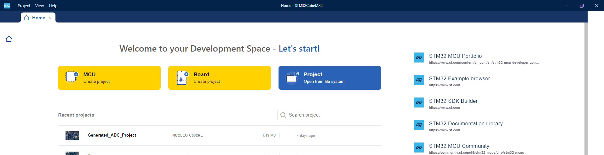
Select the Board ¶

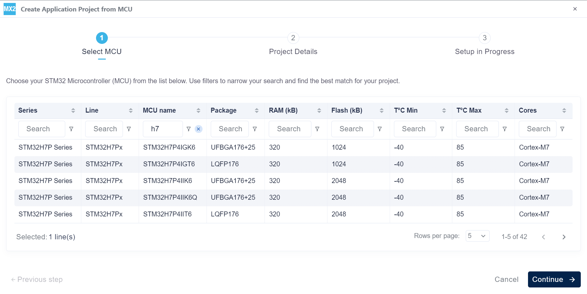
Create the project ¶

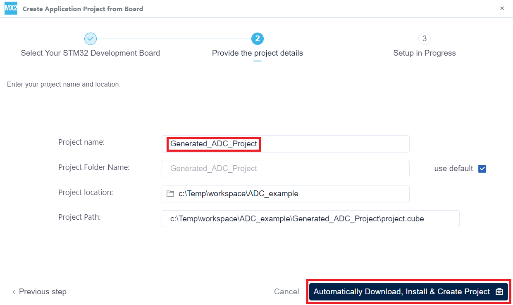
Peripheral configuration ¶
This section is dedicated to providing essential steps for configuring peripherals using STM32CubeMX2.
RCC ¶
Configure RCC.
To be added later after the STM32CubeMX2 gets updated.

Under Construction ¶
ICACHE ¶
Important
- The STM32H7P is an ARM Cortex-M7 based microcontroller featuring integrated instruction and data caches. Consequently, cache management is handled through the ARM System Control Block (SCB) APIs:
-
SCB_EnableICache() — to enable the instruction cache
SCB_EnableDCache() — to enable the data cache
ADC ¶
Configure ADC.

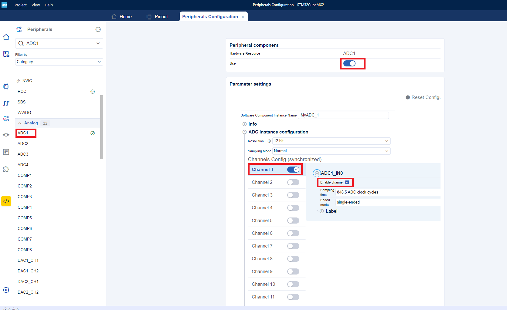
Configure DMA for ADC ¶
Configure DMA .

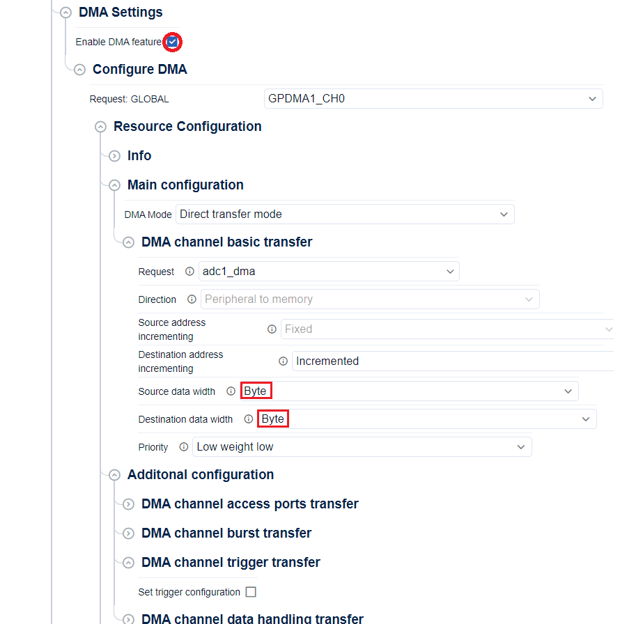
Configure NVIC for ADC ¶

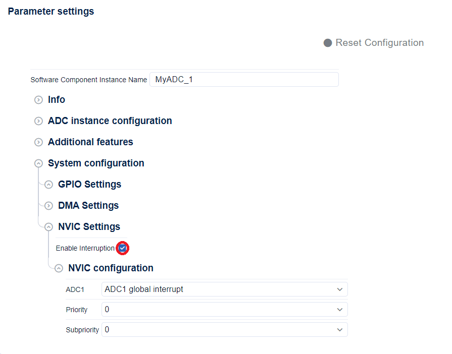
GPIO ¶
Configure GPIO .

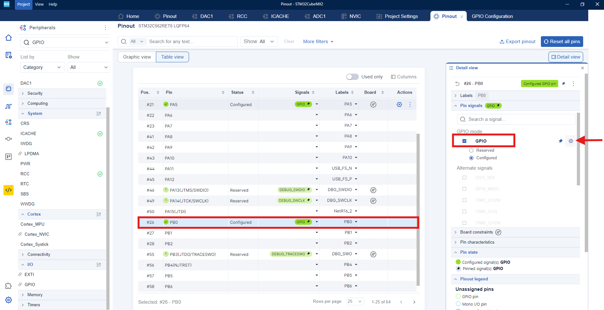

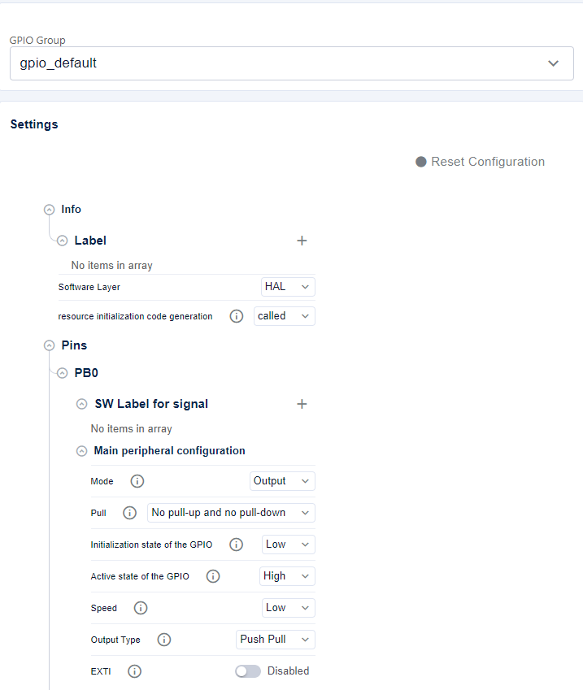
Once all peripherals have been configured, generate the project .
Generate STM32CubeMX2 project ¶

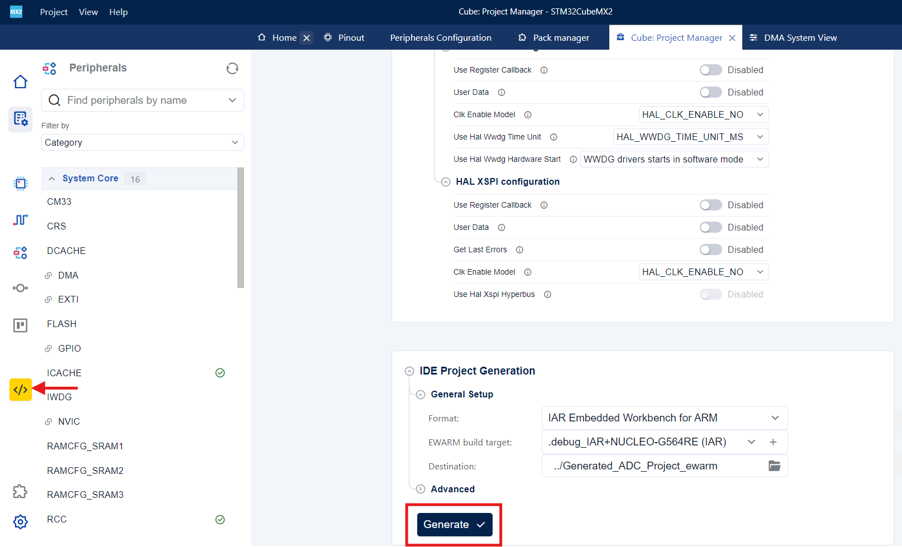
Generated Linker, startup, system, hal conf, external env files and drivers ¶
-
After generation, DFP pack , Drivers pack and CMSIS are generated under $YOUR_PORJECT_NAME$_ewarm.

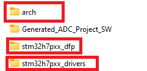
-
startup_stm32STM32H7P64xx.c , stm32STM32H7P64xe_flash.icf , system_stm32STM32H7Pxx.c and stm32_external_env.h are generated under $YOUR_PORJECT_NAME$_ewarm/project/Device/STM32H7P64

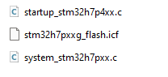
-
Use the stm32_external_env.h file located generated in the
STMicroelectronics.stm32h7pxx_dfpfolder. -
All peripherals configuration and stm32h7pxx_hal_conf.h are generated under $YOUR_PORJECT_NAME$_ewarm/project/generated/hal

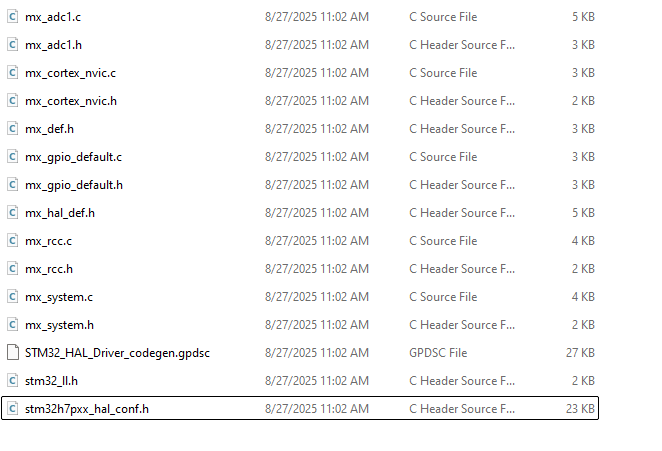